Exercise 1: Age-sex pyramid of Singapore Population
Objective
The target of this exercise is to reveal the demographic structure of Singapore population at planning area level by using age-sex pyramid method.
In this exercise, a single view by using trellis display for nine selected planning areas.
Data
Singapore Residents by Planning Area / Subzone, Age Group, Sex and Type of Dwelling, June 2022 from Department of Statistics, Singapore going to be used.
Designe Tool
Tableau desktop should be used to design the analytical visualization.
Step-by-step
Age-sex pyramid Visualization
| No. | Step | Action |
|---|---|---|
| 1 | Luanch Tableau, and Click on menu “File > Open” to open data file downloaded. | 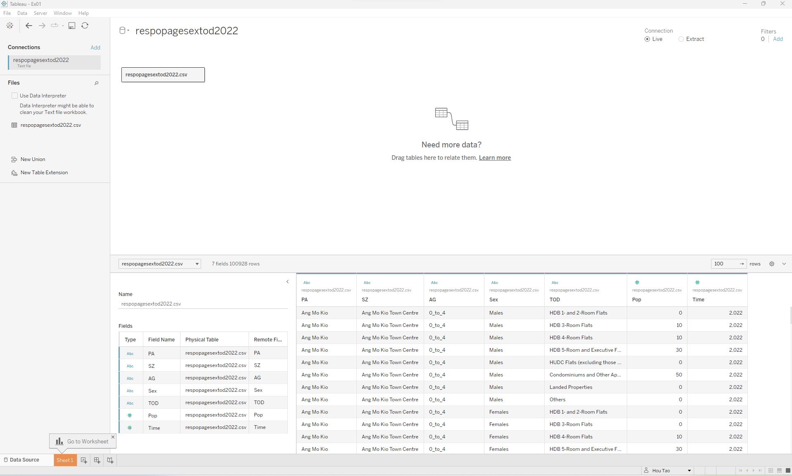 |
| 2 | Add a new worksheet, to create two calculated fields “Male” with formula IF [Sex] == "Males" THEN [Pop] END. |
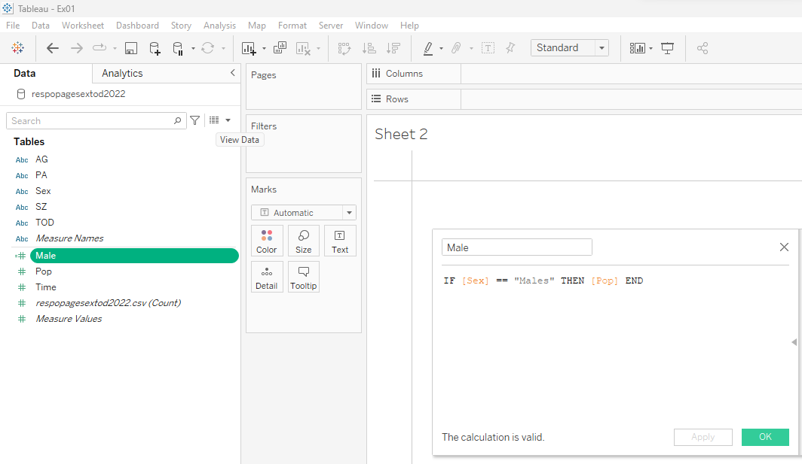 |
| 3 | To create two calculated fields “Female” with formula IF [Sex] == "Females" THEN [Pop] END. |
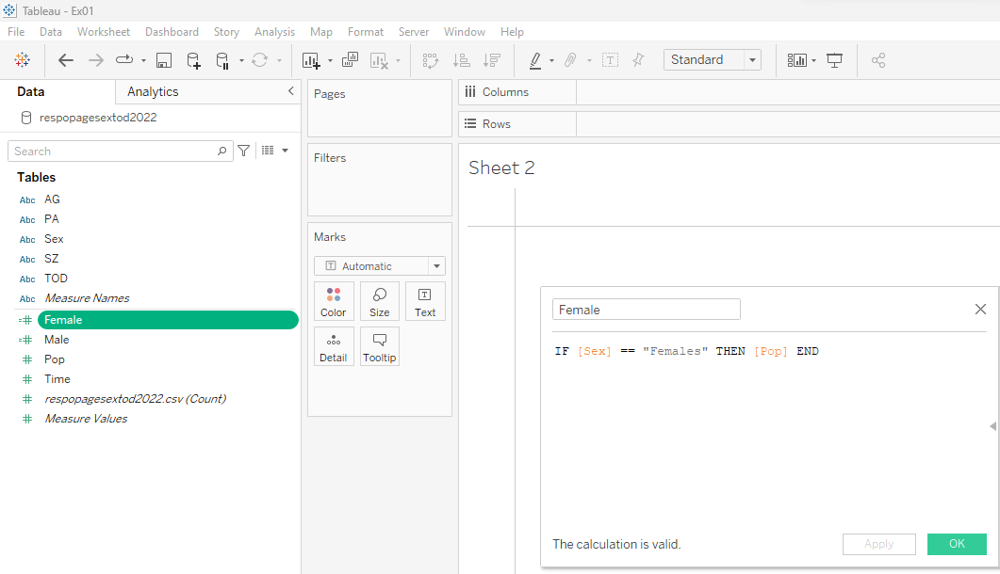 |
| 4 | Drag Planning Area (PA) and drop to Columns, and drag Age Group (AG) and drop to Rows. | 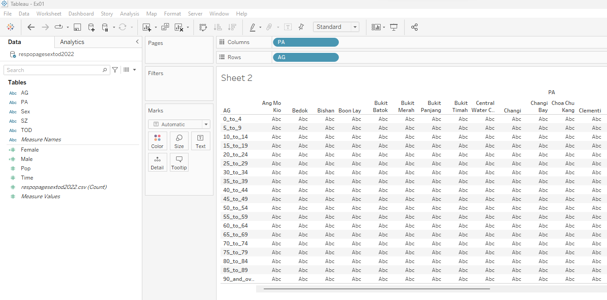 |
| 5 | Drag calculated field Male and Female,drop them to Columns. | 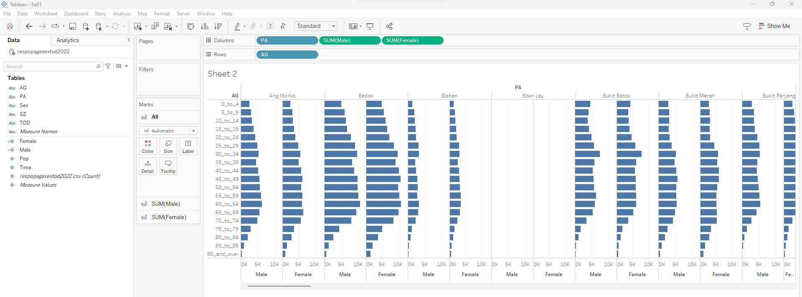 |
| 6 | Right click on “Male” for planning area “Ang Mo Kio”, click on “Edit Axis” on the pop-up menu, check the “Reversed” and close the pop-up windows. blue bars for Male shown on the right upon Reversed checked. | 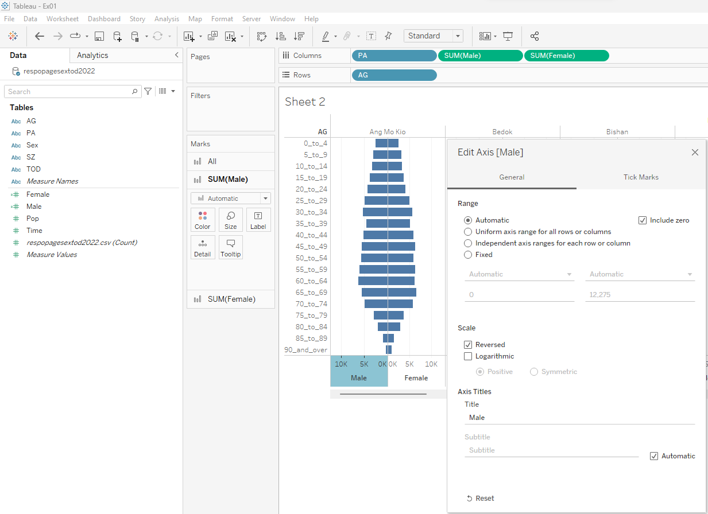 |
| 7 | Click on triangle beside the chart column Age group “AG”, and checked the “Data source order”. | 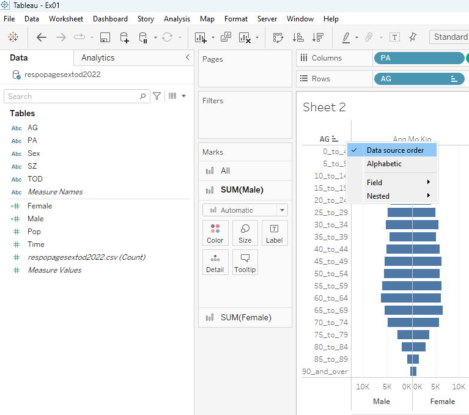 |
| 8 | Right click on “AG” then click on “Sort Descending” to sort the Age Group in descending order for the chart. | 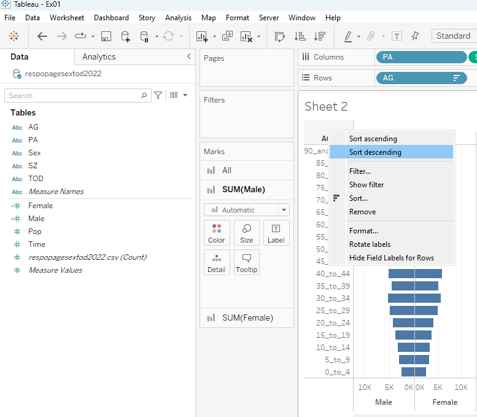 |
| 9 | Drag Sex to color under marks for All, and edit color to select appropriate color for Male and Female. | 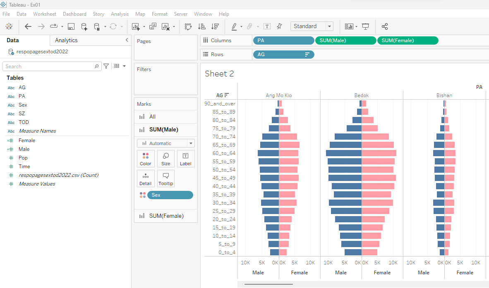 |
| 10 | Duplicate the worksheet as new worksheet, Right click on SUM(Male) on the columns and select “Add Table Calculation…”. On popup window “Table Calculation”, select “Percent of Total” for Calculation Type, and choose “Table (down)” for “Compute Using”, then close the popup window. Repeat the same step for SUM(Female). | 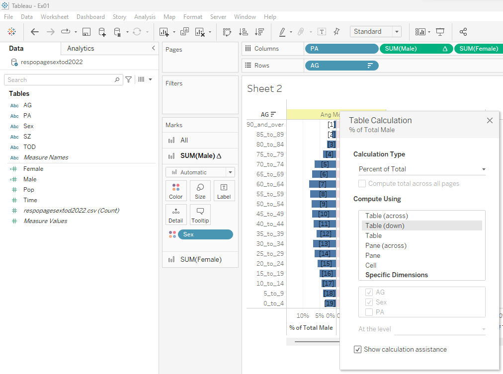 |
| 11 | Click on “Add” under Filters on the top-right, select nine planning areas Ang Mo Kio, Bedok, Clementi, Punggol, Sembawang, Sengkang, Tampines, Toa payoh, Woodlands. | 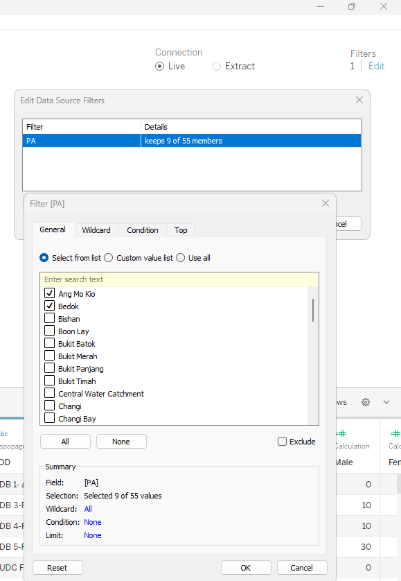 |
| 12 | Navigate to chart created, it will show pyramid chart for nine planning areas Ang Mo Kio, Bedok, Clementi, Punggol, Sembawang, Sengkang, Tampines, Toa payoh, Woodlands selected. | 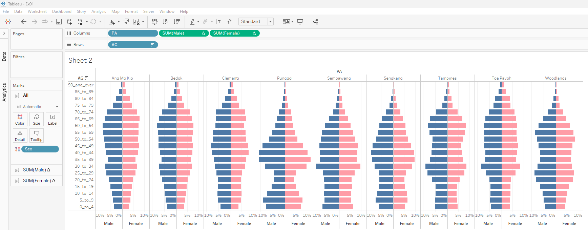 |
Dashboard
| No. | Step | Action |
|---|---|---|
| 1 | Add a new dashboard, change the size of the page to Automatic, and drag the SG (2022) Age-sex pyramid by Planning Area and Population Proportion to the central of the dashboard, and drag the SG (2022) Age-sex pyramid by Planning Area and Population Size to the bottom of the dashboard. Extract the data and save the tableau data extract file, then Save the dashboard to Tableau Public. | 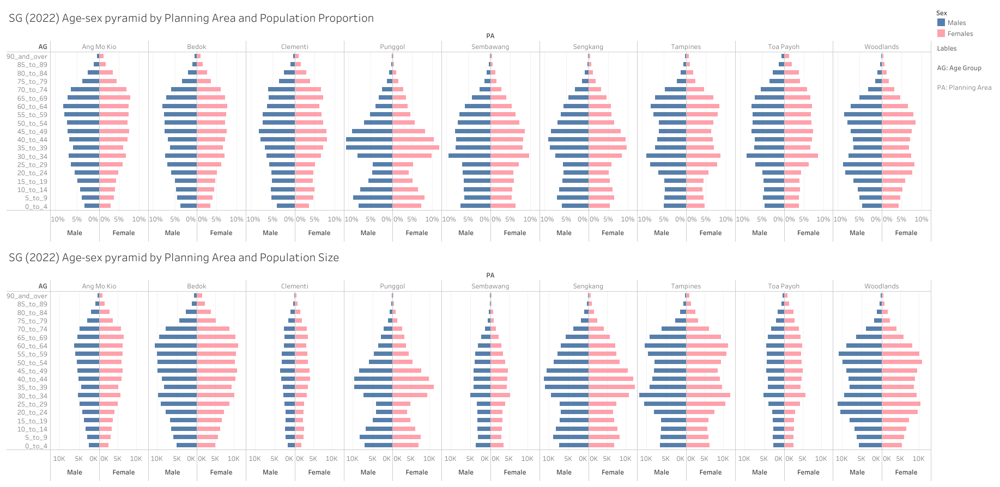 |
Published Dashboard
Write-up
The two age-sex pyramid charts reveal different levels of detail in different situations; the first chart with percentages can hide the actual size but reveal the proportion among different data categories. In contrast, the second chart can provide both the size and proportion of each category (e.g., Age Group (AG)) from a different group of data (e.g., Planning Area (PA)).
Based on the Age-sex pyramid chart, provides better visualization for the population of different age groups in each planning area; the bar length represents the size of the age group.
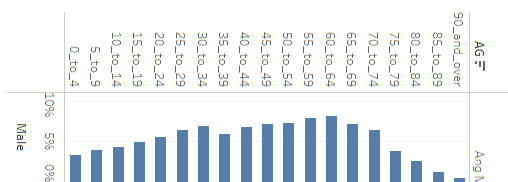
- The overall chart of Males or Females represents the distribution of different age groups within the planning area.
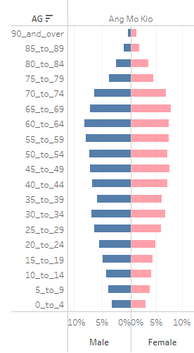
From the Age Group of Males of Ang Mo Kio trends, it can be figured out that the birth rate in recent five years is lower than in the previous five years.
Compare the Age Group between Males and Females in Ang Mo Kio on the Age-sex pyramid chart; it depicts the birth rate of Males more than females within Ang Mo Kio.
The chart of Punggol below depicts that most people in the Punggol area are aged between 30 and 55.
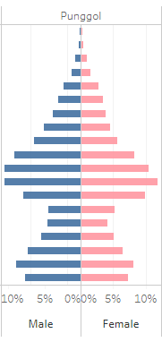
- Comparing the chart between Punggol and Bedok, it is easily found that Bedok has more elderly citizens than the Punggol area.
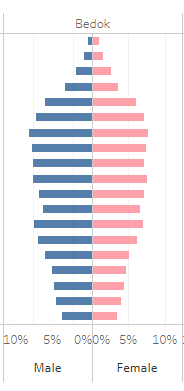
- By comparing the chart horizontally among different planning areas, the chart can reveal lots of information from the chart itself without a single word.
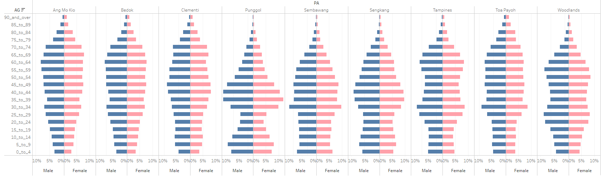
The proportion of the birth rate of Sengkang, Tampines, and Woodlands is much large than Toa Payoh, Clementi, and Ang Mo Kio by comparing the bar length based on age group 0_to_4.
Overall population size of different planning areas can be revealed by the size of the combined area of both Blue and Pink of each planning area from the Chart, e.g., The overall population size of Seng Kang, Bedok, Tampines, and Woodlands are much larger than Toa Payoh, Clementi, and Sembawang.
- By supplying different information to the Age-sex pyramid chart, it will provide a different level of detail; the Age-sex pyramid below are coloured with Type of Dwelling (TOD) or Subzone respectively.
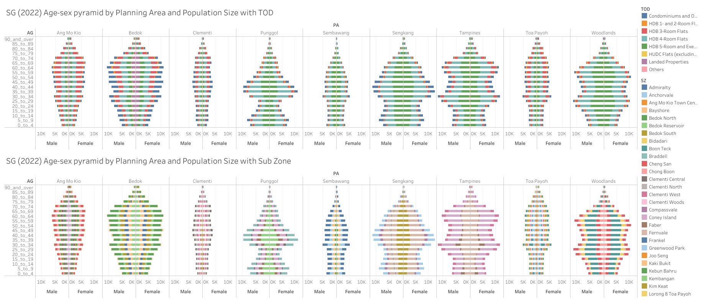
Chart coloured with Type of Dwelling (TOD) reveals information such as Planning Areas like Ang Mo Kio, Bedok, Tampines, and Toa Payoh having more 3-room flats than Punggol, Sembawang, Seng Kang, and Woodlands.
It also reveals that most people in Singapore stay in 4 or 5-Room flats than 3-Room flats in Punggol and Sembawang, Seng Kang, Tampines, and Woodlands.
Chart coloured with Sub Zone reveals information such as the no. of popular zone areas in each Planning Area, e.g., four main areas in Tampines - Simei, Tampines East, Tampines West, and Tampines North.
- Age-sex pyramid chart can reveal plenty of information to the target audience for decision-making; it also can reveal information based on the different requirements to hide unnecessary information from the chart.